Activity: Apply a surface mesh to a sheet metal part
Surface meshes are generally used in the analysis of very thin models; in this activity, you will apply a surface mesh to a sheet metal part.
-
Open the file FE_enclosure.psm.
Simulation models are delivered in the \Program Files\Siemens\Solid Edge 2023\Training\Simulation folder.
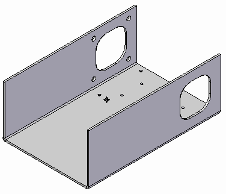
-
Create a study.
All analyses must have an active study. No study exists for this part, so you will create one.
-
In the Simulation tab→Study group, select Tin from the Material List.
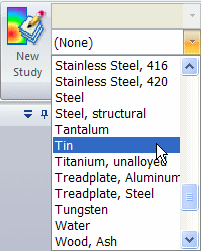
-
Select New Study.
 .
. -
For a sheet metal model, the Mesh Type defaults to Surface. From the Study Type list, choose Linear Static and click OK.
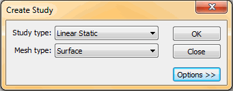
You can see the new study in the Simulation tab→Study group.
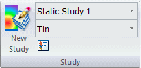
-
-
Define a mid-surface.
Analysis of a sheet metal part (or any thin part) requires a mid-surface.
-
Choose Simulation tab→Geometry group→Mid-Surface.

-
On the Mid-Surface command bar, do the following:
-
Click Offset From Side 1.
-
Ensure Offset Ratio is set to 0.500.
You can see that the part is automatically selected, and the mid-surface is displayed in green
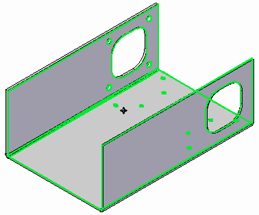
-
Click the Preview button, and then click Finish.
-
Click Cancel to exit the command.
-
Zoom in on the model to see the mid-surface.
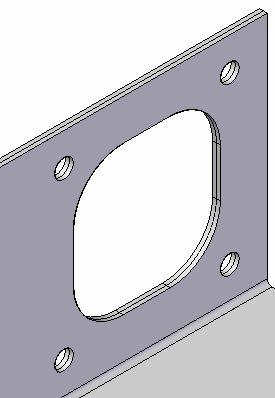
-
-
-
Select the mid-surface.
-
Choose Simulation tab→Geometry group→Define.

-
Select the mid-surface as shown and click Accept.
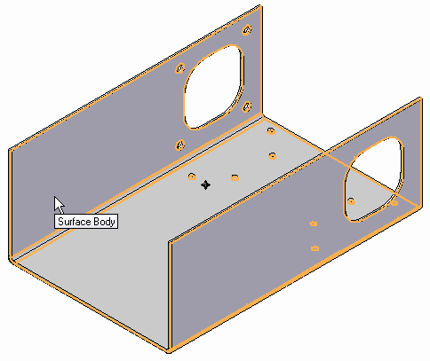
-
-
Mesh the enclosure.
-
Choose Simulation tab→Mesh group→Mesh.

-
Click the Mesh button.
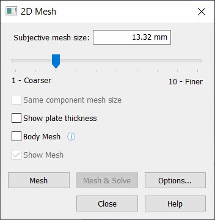
The NX Nastran mesh processing starts and displays a progress meter.
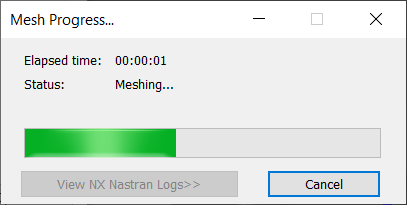
Note:In the absence of loads and constraints, you cannot solve the study, but you can mesh the model.
After a short period of time, the enclosure mid-surface displays with a surface mesh.
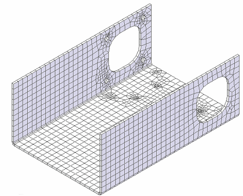
-
-
Change the subjective mesh sizing.
As with tetrahedral meshes, you can change the number of elements using the Subjective mesh slider.
-
Use the slider to change the mesh size to 1 and click Mesh again.
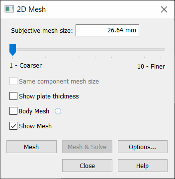
Notice the reduction in the number of elements.
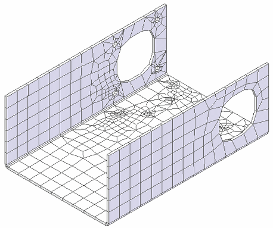
-
Use the slider to change this to a value of 7, click Mesh again, and review the results.
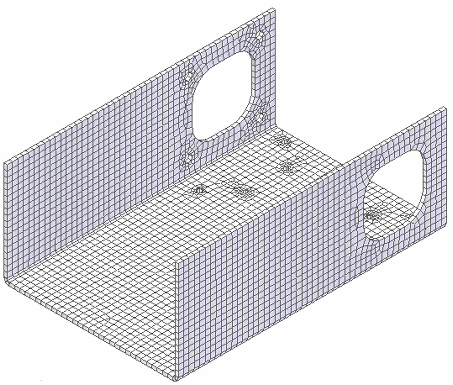
-
Note that each increase in the number of elements requires an increase in time to mesh the part.
-
An increase in the number of elements results in increased accuracy of the analysis; however, you must decide whether this improvement in accuracy is worth the additional processing time.
-
-
Close this file.
How do I
Mesh the modelActivity: Use subjective mesh sizing
Activity: Size the mesh on an edge
Activity: Size the mesh on a surface
Learn more
MeshesMesh sizing
Examining the mesh
Identifying areas of poor mesh quality
Look up more details
Mesh dialog boxMesh Options dialog box
Body Size dialog box
Edge Size dialog box
Surface Size dialog box
Check Element Quality